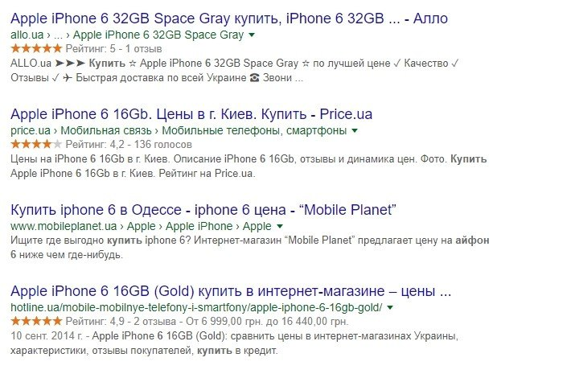

Словари микроразметки
Какие словари микроразметки наиболее популярны???:
- Schema.Org
Здесь мы видим наименование товара, стоимость товара, валюту, описание товара, рейтинг; 
- OpenGraph
Тут видны,URL страницы, изображение статьи, обзора,имя сайта.